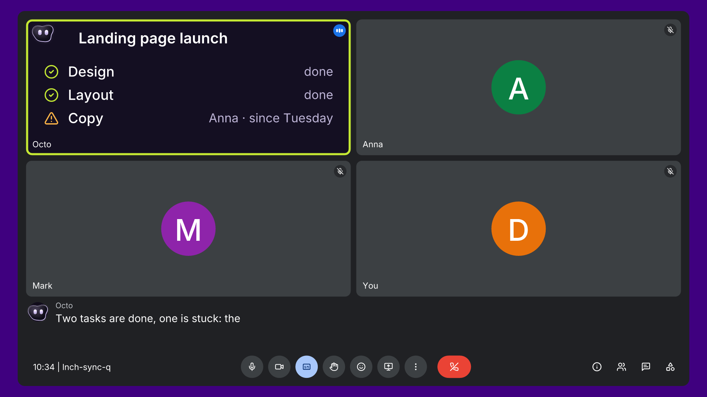

Octo joins your team’s calls, answers when you call it by name, and after the call does the follow-up: everyone gets their own tasks, and ClickUp or Asana stays up to date. For a small team, it works like the junior project manager it hasn’t hired yet.
The plan: €700 on Meta and €300 on YouTube creators bring small teams to one button, “Invite Octo to your next call”. Goal: 10+ invites in 7 days.

Octo on a call, answering on its own tile. People in the demo are made up.
| In the call | Tasks after the call | Updates the task on “done” | Platforms | |
|---|---|---|---|---|
| AI note-takers (Otter, Fireflies) | Voice Q&A on a wake word | Summary and action items | Not claimed | Meet, Zoom, Teams |
| Sembly | “Ask Sembly”, by text | With owners and deadlines | Not claimed | Zoom, Meet, Teams, Webex |
| AI built into the suite (ZoomMate, Teams) | In-meeting questions | Follow-ups in its own suite | Not claimed | Tied to its own suite |
| Octo | By voice and on its own tile | Each person’s own, by DM, with the exact quote | On the next call | Meet, Teams, Zoom, Slack Huddles, Webex, GoTo |
From the vendors’ own pages, checked 7 and 8 Nov. None of about 12 pages claims all four. “AI teammate”, “meeting agent” and “follow-up” are taken, so we lead with what Octo does on the call.
Assumptions to check against Meta’s forecast. Creators: 2 or 3 small productivity or AI-tools channels, a 30 to 60 second segment each.
Meta ad, creator segment or founder post
Landing page with the demo and the note-taker comparison
Invite Octo to your next call
Work email in; Oleksii invites them to a call
Octo joins the call and shows what it does
A product-led loop: every call Octo joins shows it working to everyone on it. Guests assigned a task get it by DM, with the host’s approval and an opt-out, plus a way to get Octo for their own team.
Turn the note-taker comparison into a page that answers “which meeting assistant updates my tracker?”, so ChatGPT and Perplexity can cite it. Week two onward.
The weekly team call of a small team with no PM. Every creative, page and creator script speaks to that one call.
Next: the button books a call where Octo runs its own demo, answers questions by voice and sends the prospect a task afterwards, with Oleksii on every call in week one.
To check first: Octo switches to a reduced mode when an outside guest joins, and the prospect is a guest.
Invites from teams of up to 50 people
Meta creative that wins on hook rate and cost per request
One-liner that wins on LinkedIn
Creator segment published
Targets are assumptions. There are no real results yet.
Landing live. Meta starts with 5 creatives. One-liner 1 on LinkedIn. 5 creators contacted.
One-liner 2. Answer 5 Reddit threads.
Pause the 2 weakest creatives. Retargeting on. One-liner 3.
Confirm 2 or 3 creator segments. One-liner 4.
Move budget to the best creative.
First creator segment goes live.
Read the numbers. Keep, kill or double.
| Bots in meetings | Consent and bot fatigue run through 18 of 34 public quotes about note-takers (Hacker News, Zoom Community, Trustpilot). Teams choose which calls Octo joins, and it joins visibly as a participant. |
| Client calls | When an outside guest joins, Octo switches to a reduced client mode. We lead with the team’s own calls and add client calls once that mode is ready. |
| The audience is a bet | No public quote so far comes from a founder-led team without a PM. Five buyer conversations this week validate or change the ICP. |
| Sembly | Sells “AI meeting agent” to the same client-facing teams: $10 to $30 per user per month billed annually, 7-day free trial. We lead with voice on the call, tasks updated on “done”, and six platforms. |